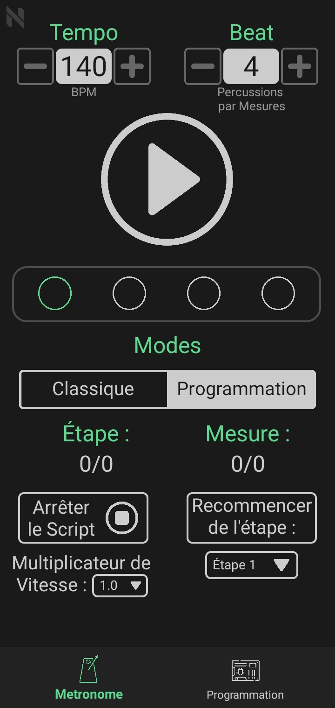
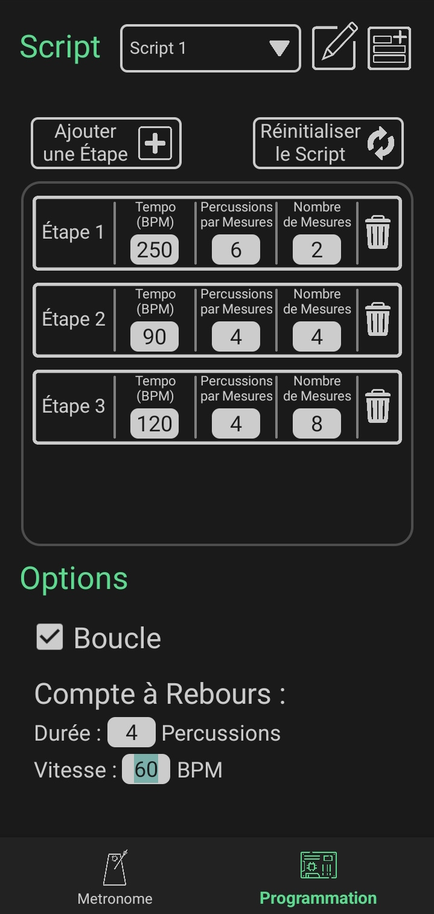
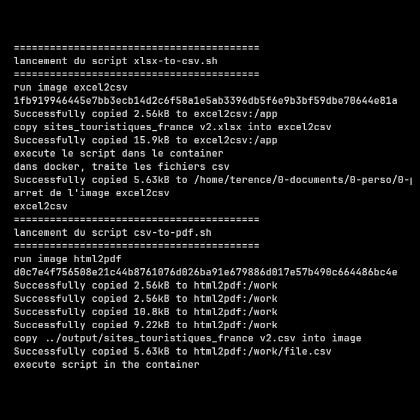
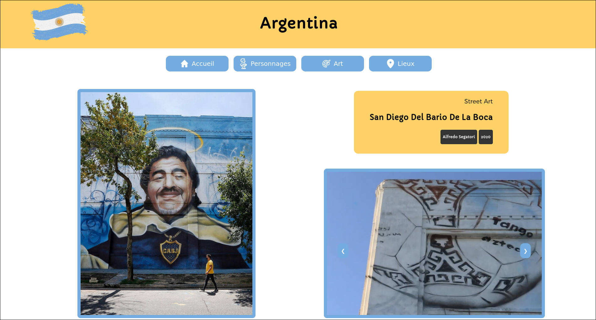
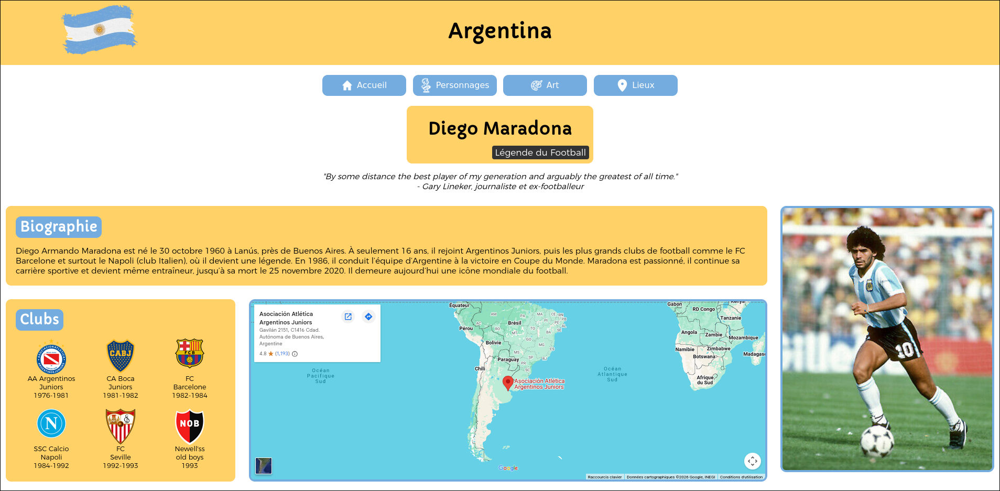

Bonjour, je suis
Térence Chardès
Étudiant en 1ère année de BUT Informatique
À Propos de Moi
Passionné de développement informatique, je conçois des projets variés utilisant différentes technologies, avec l’envie constante de progresser et d'apprendre plus.
J'ai obtenu un baccalauréat général, avec la mention Très Bien et les spécialités Mathématiques, NSI et Physique-Chimie au Lycée de l'Elorn à Landerneau. La spécialité NSI m'a fait découvrir l'informatique et m'a donné envie d'en faire mon métier.
Actuellement, je suis en 1ère année de BUT informatique à l'IUT de Lannion et j'y apprends la théorie tout en appliquant mes connaissances sur des projets universitaires.
Pour la suite de mon cursus, dès juillet 2026, je serai en alternance à E-Medys, une entreprise spécialisée dans le développement de solutions médicales pour aider les patients au suivi de leur traitement, ou pour former les urgentistes. Cela me permettra de mettre en pratique mes compétences sur des projets concrets dans un environnement professionnel.
Programme National du BUT InformatiqueMes Compétences
Langages
Environnements
Mes Projets
Métronome Programmable
Application Android - Projet Personnel
Application permettant de programmer un métronome, pour lui faire changer automatiquement de tempo et de rythme au fil des mesures de la musique.
Compétences acquises :
- "Réaliser" : Développer des applications informatiques simples
- Implementation de fonctions, développement d'interfaces utilisateur.
- "Gérer" : Concevoir et mettre en place une base de données
- Conception et mise à jour d'une base de donnée relationnelle, requêtes SQL.
Technologies : Android Studio, Kotlin, XML, SQL
Accéder à la page d'installation

Sokoban
Jeu Vidéo - Projet Universitaire
Jeu vidéo de résolution d'énigmes implémenté dans le terminal.
Compétences acquises :
- "Réaliser" : Développer des applications informatiques simples
- Implementation et élaboration de conceptions simples, tests.
- "Optimiser" : Appréhender et construire des algorithmes
- Analyse de problème, comparaisons d'algorithmes.
Technologie : C
Télécharger le projetFile Thunder
Programme d'automatisation - Projet Universitaire
Programme d'installation de poste de développement qui permet de convertir des fichiers bruts en fichiers utilisables par une équipe de développement.
Compétences acquises :
- "Collaborer" : Identifier ses aptitudes pour travailler dans une équipe
- Attributions de tâches, respect d'un calendrier, travail d'équipe.
- "Administrer" : Installer, configurer, mettre à disposition, des services et des réseaux
- Configuration d'un poste de travail, adaptations aux différentes configurations utilisateurs.
Technologies : Docker, Bash, PHP
Télécharger le projet
Argentina
Site web - Projet Universitaire
Site vitrine présentant la culture argentine en y détaillant quelques de ses personnalités, lieux et oeuvres artistiques
Compétences acquises :
- "Collaborer" : Identifier ses aptitudes pour travailler dans une équipe
- Identification des fonctions et des rôles de chaque membre d’une équipe, utilisation de Git pour collaborer sur le projet.
- "Conduire" : Identifier les besoins métiers des clients et des utilisateurs
- Appréhension des besoins clients et utilisateurs, identification des acteurs et des différentes phases d’un cycle de développement.
Technologies : HTML, CSS, Javascript, Git
Accéder au Github
